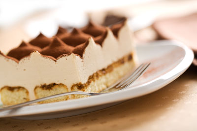

Préparation
- Mélanger le sucre aux jaunes d'oeuf.
- Ajouter le mascarpone. Bien mélanger.
- Battre les blancs en neige et les incorporer délicatement à la préparation.
- Disposer la moitié des biscuits rapidement trempés dans le café (éventuelement mélancé avec une cuillère de marsala*), sur le fond d'un plat.
- Recouvrir avec la moitié de la préparation.
- Faire une autre couche de biscuits.
- Recouvrir avec le reste de la préparation et placer au réfrigérateur pendant 4 heures minimum (idéalement 24h).
- Avant de servir, saupoudrer de cacao.
* L'abus d'alcool est dangereux pour la santé. A consommer avec modération.